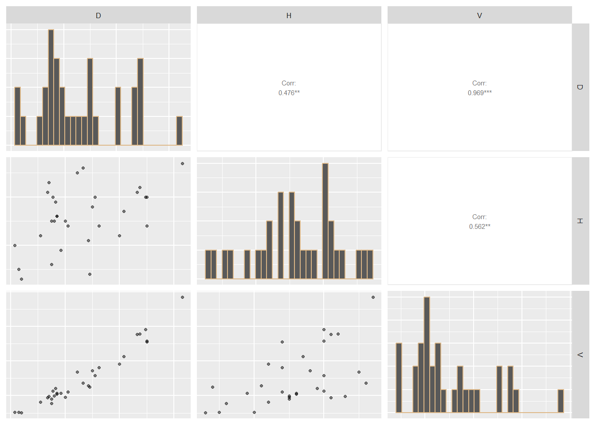
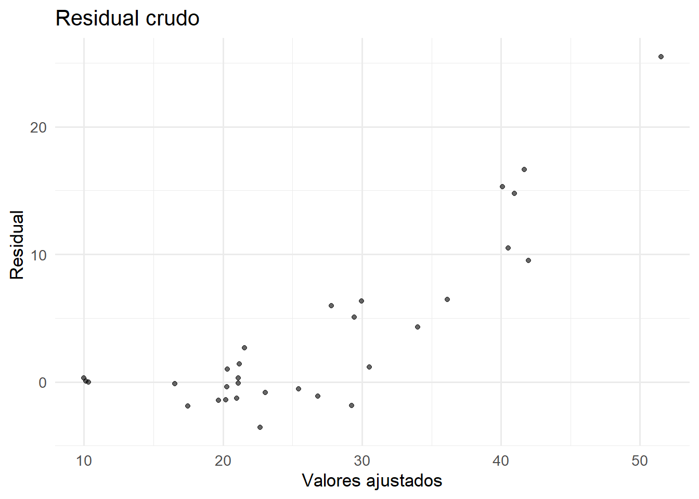
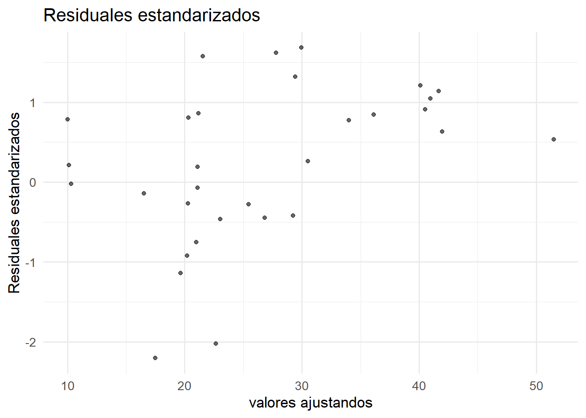
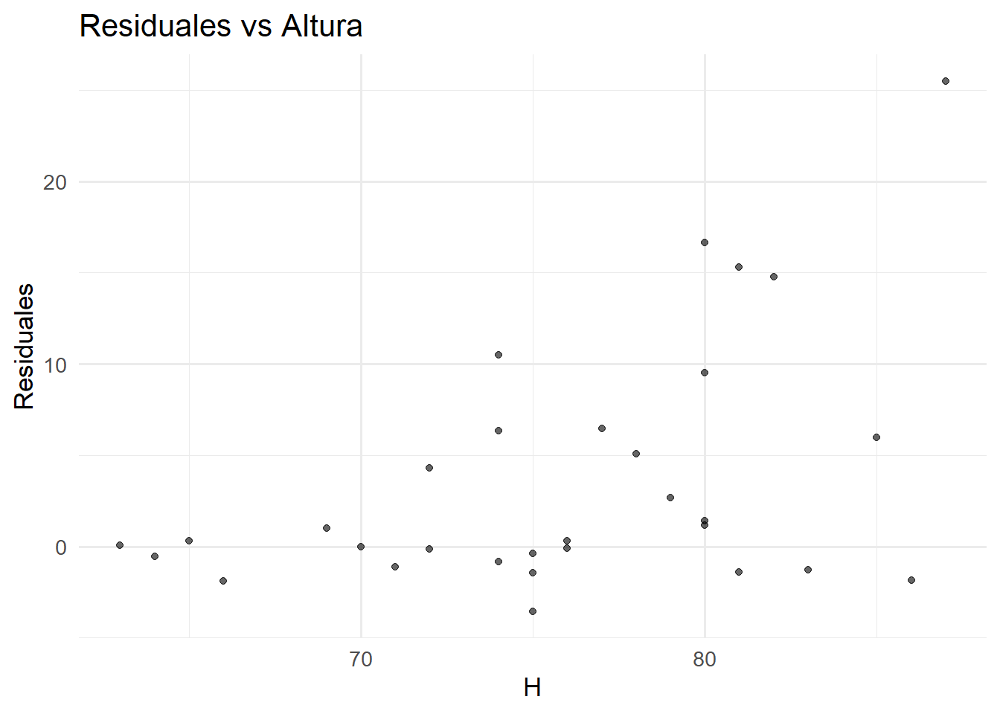
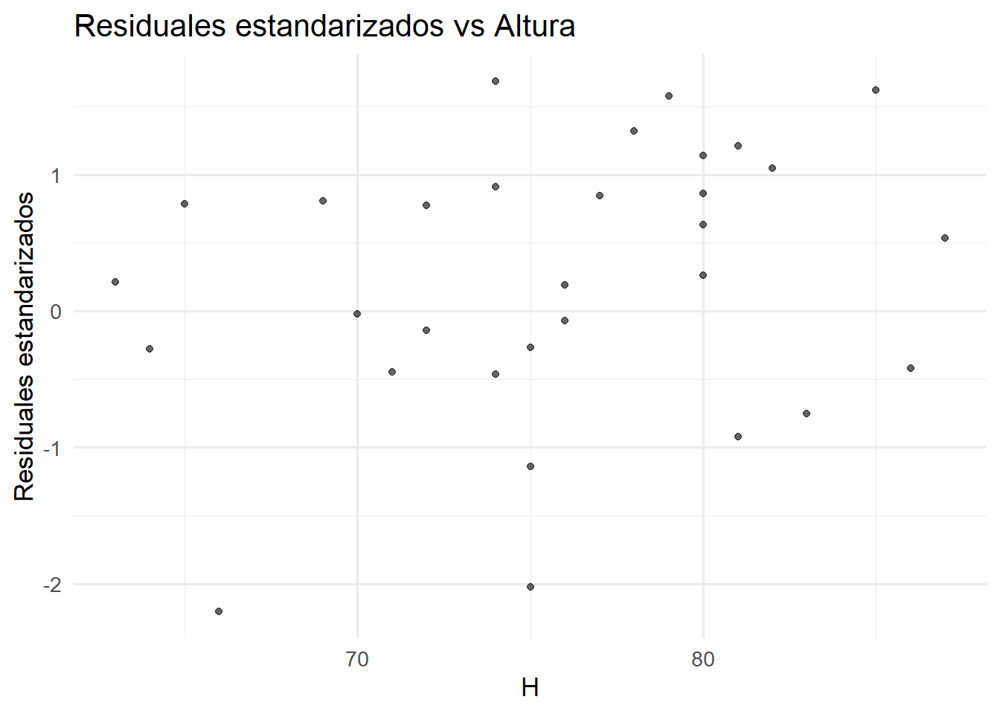
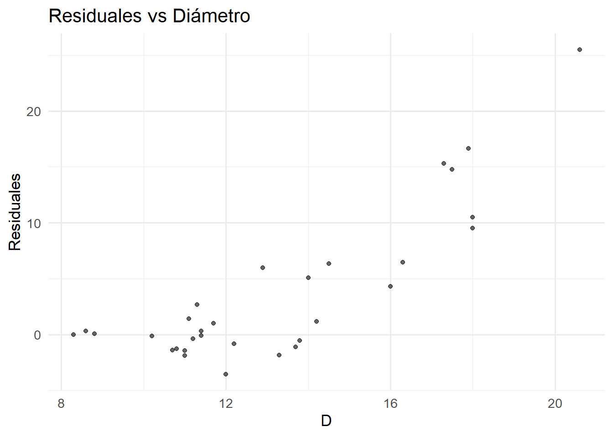
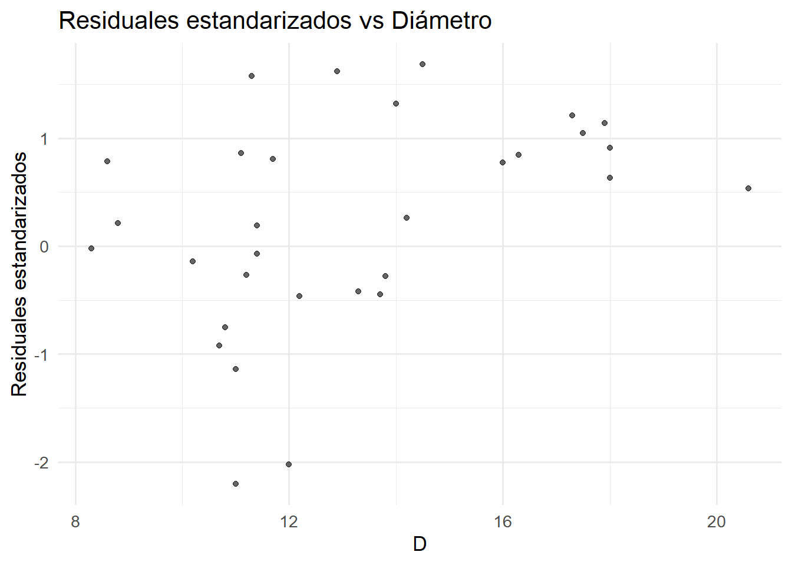

# Algoritmo de Fisher Scoring para Modelo Normal con Heteroscedasticidad
# y: vector de variable respuesta (tamaño n)
# X: matriz de covariables para la media (n x p)
# Z: matriz de covariables para la varianza (n x q)
# beta inicial: valor inicial para beta
# gamma inicial: valor inicial para beta
# tolerancia: valor epsilon para determinar la convergencia 1e-6
# max_iteraciones: número máximo de iteraciones del algoritmo
# progreso: mostrar iteraciones
fisher_scoring <- function(y, X, Z,
beta_inicial = NULL,
gamma_inicial = NULL,
tolerancia = 1e-6,
max_iteraciones = 100) {
n <- length(y) # número de observaciones
p <- ncol(X) # número de parámetros beta
q <- ncol(Z) # número de parámetros gamma
# PASO 1: INICIALIZACIÓN
# Valores iniciales
if (is.null(beta_inicial)) {
beta <- rep(0, p) # vector de ceros si no de proporcionan valores iniciales
} else {
beta <- beta_inicial
}
if (is.null(gamma_inicial)) {
gamma <- rep(0, q)
} else {
gamma <- gamma_inicial
}
# Calcular varianzas iniciales: sigma_i^2 = exp(Z_i' * gamma)
eta <- as.vector(Z %*% gamma)
sigma2 <- exp(eta)
# Matriz de pesos inicial: W = diagonal(1/sigma_i^2)
W <- diag(1 / sigma2)
# iteramos
iteracion <- 0
convergio <- FALSE
# PASO 2: BUCLE PRINCIPAL DE ITERACIONES
while (iteracion < max_iteraciones && !convergio) {
iteracion <- iteracion + 1
# Guardar valores anteriores para verificar convergencia
beta_anterior <- beta
gamma_anterior <- gamma
# a) ACTUALIZAR BETA
# beta_nuevo = (X' * W * X)^(-1) * X' * W * y
cov_beta <- solve(t(X) %*% W %*% X)
XtWy <- t(X) %*% W %*% y
beta <- cov_beta %*% XtWy
# b) CONSTRUIR RESPUESTA DE TRABAJO Y_TILDE
# y_tilde_i = eta_i + (1/sigma_i^2) * (y - X*beta)^2 - 1
eta <- as.vector(Z %*% gamma)
residuos <- y - X %*% beta
y_tilde <- eta + (residuos^2) / sigma2 - 1
# c) ACTUALIZAR GAMMA
# W_sigma = (1/2) * Identidad
W_sigma <- diag(rep(0.5, n))
# gamma_nuevo = (Z' * W_sigma * Z)^(-1) * Z' * W_sigma * y_tilde
cov_gamma <- solve(t(Z) %*% W_sigma %*% Z)
ZtWy_tilde <- t(Z) %*% W_sigma %*% y_tilde
gamma <- cov_gamma %*% ZtWy_tilde
# d) ACTUALIZAR VARIANZAS Y PESOS PARA LA SIGUIENTE ITERACIÓN
eta <- as.vector(Z %*% gamma)
sigma2 <- exp(eta)
W <- diag(1 / sigma2)
# VERIFICAR CONVERGENCIA
# Criterio: ||parametros_nuevos - parametros_anteriores||_2 < tolerancia
parametros_anteriores <- c(beta_anterior, gamma_anterior)
parametros_nuevos <- c(beta, gamma)
diferencia <- sqrt(sum((parametros_nuevos - parametros_anteriores)^2))
if (diferencia < tolerancia) {
convergio <- TRUE
}
}
# Advertencia si no convergió
if (!convergio) {
warning(sprintf("No convergió en %d iteraciones", max_iteraciones))
}
# CALCULAR RESULTADOS FINALES
# Valores predichos y residuales finales
valores_ajustados <- as.vector(X %*% beta)
residuales_finales <- y - valores_ajustados
residuales_estandarizados <- residuales_finales / sqrt(sigma2)
# RETORNAR RESULTADOS
resultado <- list(
# parámetros estimados
beta = as.vector(beta),
gamma = as.vector(gamma),
# varianzas estimadas
sigma2 = as.vector(sigma2),
# errores estándar
se_beta = sqrt(diag(cov_beta)),
se_gamma = sqrt(diag(cov_gamma)),
# valores ajustados y residuales
valores_ajustados = valores_ajustados,
residuales = residuales_finales,
residuales_estandarizados = residuales_estandarizados
)
return(resultado)
}Regresión Normal Heteroscedástica
Modelo de regresión lineal
Sean \(Y_1, Y_2, \dots, Y_n\) variables aleatorias independientes tales que para cada \(i = 1, \dots, n\), \[ Y_i = \mu_i + \varepsilon_i, \] donde \[ \varepsilon_i \sim \mathcal{N}(0, \sigma_i^2), \] independientes entre sí.
Además, \[ \mu_i = \mathbf{x}_i^\top \boldsymbol{\beta}, \quad \ln \sigma_i^2 = \mathbf{z}_i^\top \boldsymbol{\gamma}, \] donde \(\mathbf{x}_i\) y \(\mathbf{z}_i\) son vectores de covariables correspondientes al individuo \(i\), asociados a la media y a la varianza respectivamente, y \[ \boldsymbol{\beta} \in \mathbb{R}^p, \quad \boldsymbol{\gamma} \in \mathbb{R}^q \] son vectores columna de parámetros.
El uso del logaritmo en la varianza asegura que \(\sigma_i^2 > 0\) para todo \(i\).
Los parámetros \(\boldsymbol{\beta}\) representan el efecto de los predictores sobre la media condicional de \(Y_i\) dado \(\mathbf{x}_i\), mientras que \(\boldsymbol{\gamma}\) representan el efecto de los predictores sobre el logaritmo de la varianza condicional de \(Y_i\) dado \(\mathbf{z}_i\).
Si \(\boldsymbol{\gamma} = \mathbf{0}\), el modelo se reduce al modelo clásico de regresión lineal homocedástico.
Estimación
Sea \(\boldsymbol{\theta} = (\boldsymbol{\beta}, \boldsymbol{\gamma})\) el vector de parámetros.
La función de densidad para una observación \(y_i\) es: \[ f_{\boldsymbol{\theta}}(y_i) = \frac{1}{\sqrt{2 \pi \sigma_i^2}} \exp\left( -\frac{(y_i - \mathbf{x}_i^\top \boldsymbol{\beta})^2}{2 \sigma_i^2} \right), \] donde \(\sigma_i^2 = \exp(\mathbf{z}_i^\top \boldsymbol{\gamma})\).
Por el supuesto de independencia, la función de verosimilitud para la muestra completa es: \[ L(\boldsymbol{\beta}, \boldsymbol{\gamma}) = \prod_{i=1}^n f_{\boldsymbol{\theta}}(y_i) = \prod_{i=1}^n \frac{1}{\sqrt{2 \pi \sigma_i^2}} \exp\left( -\frac{(y_i - \mathbf{x}_i^\top \boldsymbol{\beta})^2}{2 \sigma_i^2} \right). \]
La log-verosimilitud es: \[\begin{align*} \ell(\boldsymbol{\beta}, \boldsymbol{\gamma}) &= \log L(\boldsymbol{\beta}, \boldsymbol{\gamma}) \\ &= -\frac{n}{2} \log(2\pi) - \frac{1}{2} \sum_{i=1}^n \log \sigma_i^2 - \frac{1}{2} \sum_{i=1}^n \frac{(y_i - \mathbf{x}_i^\top \boldsymbol{\beta})^2}{\sigma_i^2} \\ &= -\frac{n}{2} \log(2\pi) - \frac{1}{2} \sum_{i=1}^n \mathbf{z}_i^\top \boldsymbol{\gamma} - \frac{1}{2} \sum_{i=1}^n \frac{(y_i - \mathbf{x}_i^\top \boldsymbol{\beta})^2}{\exp(\mathbf{z}_i^\top \boldsymbol{\gamma})} \\ \\ \ell(\boldsymbol{\beta}, \boldsymbol{\gamma}) &= -\frac{n}{2} \log(2\pi) - \frac{1}{2} \sum_{i=1}^n \log \sigma_i^2 - \frac{1}{2} \sum_{i=1}^n \frac{(y_i - \mu_i)^2}{\sigma_i^2} \\ \\ \ell(\boldsymbol{\beta}, \boldsymbol{\gamma}) &\propto - \frac{1}{2} \sum_{i=1}^n \left[ \log \sigma_i^2 + \frac{(y_i - \mu_i)^2}{\sigma_i^2} \right]. \end{align*}\]
Las derivadas parciales de la log-verosimilitud son:
\[\begin{align*} \frac{\partial \ell}{\partial \boldsymbol{\beta}} &= \sum_{i=1}^n \frac{y_i - \mu_i}{\sigma_i^2} \mathbf{x}_i, \\[8pt] \frac{\partial \ell}{\partial \boldsymbol{\gamma}} &= -\frac{1}{2} \sum_{i=1}^n \mathbf{z}_i \left( 1 - \frac{(y_i - \mu_i)^2}{\sigma_i^2} \right), \\[8pt] \frac{\partial^2 \ell}{\partial \boldsymbol{\beta} \partial \boldsymbol{\beta}^\top} &= - \sum_{i=1}^n \frac{1}{\sigma_i^2} \mathbf{x}_i \mathbf{x}_i^\top, \\[8pt] \frac{\partial^2 \ell}{\partial \boldsymbol{\gamma} \partial \boldsymbol{\gamma}^\top} &= -\frac{1}{2} \sum_{i=1}^n \mathbf{z}_i \mathbf{z}_i^\top \frac{(y_i - \mu_i)^2}{\sigma_i^2}, \\[8pt] \frac{\partial^2 \ell}{\partial \boldsymbol{\beta} \partial \boldsymbol{\gamma}^\top} &= - \sum_{i=1}^n \frac{(y_i - \mu_i)}{\sigma_i^2} \mathbf{x}_i \mathbf{z}_i^\top. \end{align*}\]
Para construir la matriz de Información de Fisher, tomamos valos esperado de las derivadas parciales de la logverosimilitud
\[\begin{align*} \mathbb{E} \left[ \frac{\partial^2 \ell}{\partial \boldsymbol{\beta} \partial \boldsymbol{\beta}^\top} \right] &= - \sum_{i=1}^n \frac{1}{\sigma_i^2} \mathbf{x}_i \mathbf{x}_i^\top, \\[10pt] \mathbb{E} \left[ \frac{\partial^2 \ell}{\partial \boldsymbol{\gamma} \partial \boldsymbol{\gamma}^\top} \right] &= - \frac{1}{2} \sum_{i=1}^n \mathbf{z}_i \mathbf{z}_i^\top, \\[10pt] \mathbb{E} \left[ \frac{\partial^2 \ell}{\partial \boldsymbol{\beta} \partial \boldsymbol{\gamma}^\top} \right] &= - \sum_{i=1}^n \mathbb{E} \left[ \frac{y_i - \mu_i}{\sigma_i^2} \right] \mathbf{x}_i \mathbf{z}_i^\top = \mathbf{0}. \end{align*}\]
\[\begin{align*} \mathcal{I}(\boldsymbol{\theta}) &= - \mathbb{E} \begin{bmatrix} \displaystyle \frac{\partial^2 \ell}{\partial \boldsymbol{\beta} \partial \boldsymbol{\beta}^\top} & \displaystyle \frac{\partial^2 \ell}{\partial \boldsymbol{\beta} \partial \boldsymbol{\gamma}^\top} \\[10pt] \displaystyle \frac{\partial^2 \ell}{\partial \boldsymbol{\gamma} \partial \boldsymbol{\beta}^\top} & \displaystyle \frac{\partial^2 \ell}{\partial \boldsymbol{\gamma} \partial \boldsymbol{\gamma}^\top} \end{bmatrix} \\[12pt] &= \begin{bmatrix} \displaystyle \sum_{i=1}^n \frac{1}{\sigma_i^2} \mathbf{x}_i \mathbf{x}_i^\top & \mathbf{0} \\[10pt] \mathbf{0} & \displaystyle \frac{1}{2} \sum_{i=1}^n \mathbf{z}_i \mathbf{z}_i^\top \end{bmatrix} \\[12pt] &= \begin{bmatrix} \mathbf{X}^\top \, \mathrm{diag}\left(\frac{1}{\sigma_1^2}, \dots, \frac{1}{\sigma_n^2} \right) \, \mathbf{X} & \mathbf{0} \\[10pt] \mathbf{0} & \mathbf{Z}^\top \, \mathrm{diag}\left(\frac{1}{2}, \dots, \frac{1}{2} \right) \, \mathbf{Z} \end{bmatrix} \\[12pt] &= \begin{bmatrix} \mathcal{I}_\beta & \mathbf{0} \\[8pt] \mathbf{0} & \mathcal{I}_\gamma \end{bmatrix} \end{align*}\]
Algoritmo de Fisher Scoring
Ecuación principal del algoritmo Fisher Scoring \[ I^{(k)}(\boldsymbol{\theta}) \, \boldsymbol{\theta}^{(k+1)} = I^{(k)}(\boldsymbol{\theta}) \, \boldsymbol{\theta}^{(k)} + q^{(k)}, \] donde \[ \boldsymbol{\theta} = \begin{pmatrix} \boldsymbol{\beta} \\ \boldsymbol{\gamma} \end{pmatrix}, \quad I^{(k)}(\boldsymbol{\theta}) = \begin{pmatrix} I^{(k)}_{\boldsymbol{\beta}} & \mathbf{0} \\ \mathbf{0} & I^{(k)}_{\boldsymbol{\gamma}} \end{pmatrix}, \quad q^{(k)} = \begin{pmatrix} q^{(k)}_{\boldsymbol{\beta}} \\ q^{(k)}_{\boldsymbol{\gamma}} \end{pmatrix}. \]
Separando en bloques:
\[ I^{(k)}_{\boldsymbol{\beta}} \boldsymbol{\beta}^{(k+1)} = I^{(k)}_{\boldsymbol{\beta}} \boldsymbol{\beta}^{(k)} + q^{(k)}_{\boldsymbol{\beta}}, \] \[ I^{(k)}_{\boldsymbol{\gamma}} \boldsymbol{\gamma}^{(k+1)} = I^{(k)}_{\boldsymbol{\gamma}} \boldsymbol{\gamma}^{(k)} + q^{(k)}_{\boldsymbol{\gamma}}. \]
Multiplicando por las inversas:
\[ \boldsymbol{\beta}^{(k+1)} = \boldsymbol{\beta}^{(k)} + \left( I^{(k)}_{\boldsymbol{\beta}} \right)^{-1} q^{(k)}_{\boldsymbol{\beta}}, \] \[ \boldsymbol{\gamma}^{(k+1)} = \boldsymbol{\gamma}^{(k)} + \left( I^{(k)}_{\boldsymbol{\gamma}} \right)^{-1} q^{(k)}_{\boldsymbol{\gamma}}. \]
Inicialización
- Escoge un valor inicial \(\boldsymbol{\gamma}^{(0)}\).
- Calcula las varianzas iniciales:
\[ \sigma_i^{2(0)} = \exp(\mathbf{z}_i^\top \boldsymbol{\gamma}^{(0)}), \quad i=1,\dots,n \] - Define la matriz de pesos inicial para la media:
\[ \mathbf{W}^{(0)} = \mathrm{diag}\left( \frac{1}{\sigma_i^{2(0)}} \right) \]
- Escoge un valor inicial \(\boldsymbol{\gamma}^{(0)}\).
Pasos iterativos (para \(k=0,1,2,\dots\))
Actualiza \(\boldsymbol{\beta}^{(k+1)}\):
\[ \boldsymbol{\beta}^{(k+1)} = \left( \mathbf{X}^\top \mathbf{W}^{(k)} \mathbf{X} \right)^{-1} \mathbf{X}^\top \mathbf{W}^{(k)} \mathbf{y} \] donde \[ \mathbf{W}^{(k)} = \mathrm{diag}\left( \frac{1}{\sigma_i^{2(k)}} \right), \quad \sigma_i^{2(k)} = \exp(\mathbf{z}_i^\top \boldsymbol{\gamma}^{(k)}). \]Construye la respuesta de trabajo \(\widetilde{y}_i^{(k)}\):
\[ \widetilde{y}_i^{(k)} = \eta_i^{(k)} + \frac{1}{\sigma_i^{2(k)}} \left(y_i - \mathbf{x}_i^\top \boldsymbol{\beta}^{(k+1)}\right)^2 - 1, \quad \text{donde } \eta_i^{(k)} = \mathbf{z}_i^\top \boldsymbol{\gamma}^{(k)}. \]Actualiza \(\boldsymbol{\gamma}^{(k+1)}\):
\[ \boldsymbol{\gamma}^{(k+1)} = \left( \mathbf{Z}^\top \mathbf{W}_\sigma \mathbf{Z} \right)^{-1} \mathbf{Z}^\top \mathbf{W}_\sigma \widetilde{\mathbf{y}}^{(k)}, \quad \text{con } \mathbf{W}_\sigma = \frac{1}{2} \mathbf{I}_n. \]Actualiza las varianzas y la matriz de pesos para la siguiente iteración:
\[ \sigma_i^{2(k+1)} = \exp(\mathbf{z}_i^\top \boldsymbol{\gamma}^{(k+1)}), \quad \mathbf{W}^{(k+1)} = \mathrm{diag}\left( \frac{1}{\sigma_i^{2(k+1)}} \right). \]
Repetir los pasos 2a) a 2d) hasta que se cumpla el criterio de convergencia
\[ \|\boldsymbol{\theta}^{(k+1)} - \boldsymbol{\theta}^{(k)}\|_2 < \varepsilon, \]
donde \(\boldsymbol{\theta} = (\boldsymbol{\beta}^\top, \boldsymbol{\gamma}^\top)^\top\) y \(\varepsilon > 0\) es un umbral pequeño.
Implementación del algoritmo de Fisher Scoring
Ejemplo
data(mtcars)
y <- mtcars$mpg # millas por galón
X <- cbind(1, mtcars$wt) # intercepto + peso
Z <- cbind(1, mtcars$hp) # intercepto + caballos de fuerza
# Fisher Scoring
resultado <- fisher_scoring(y, X, Z)library(knitr)
# Tabla para beta con std error
beta_df <- data.frame(
Parámetro = paste0("Beta_", 0:(length(resultado$beta)-1)),
Estimación = resultado$beta,
`Error Std` = resultado$se_beta
)
kable(beta_df, caption = "Estimación del vector Beta con Error Estándar", digits = 4)
# Tabla para gamma con std error
gamma_df <- data.frame(
Parámetro = paste0("Gamma_", 0:(length(resultado$gamma)-1)),
Estimación = resultado$gamma,
`Error Std` = resultado$se_gamma
)
kable(gamma_df, caption = "Estimación del vector Gamma con Error Estándar", digits = 4)| Parámetro | Estimación | Error.Std |
|---|---|---|
| Beta_0 | 37.5141 | 1.8060 |
| Beta_1 | -5.3992 | 0.5423 |
| Parámetro | Estimación | Error.Std |
|---|---|---|
| Gamma_0 | 2.0638 | 0.5982 |
| Gamma_1 | 0.0007 | 0.0037 |
# Usando la función gls de nlme
library(nlme)
gls_model <- gls(mpg ~ wt, data = mtcars,
weights = varExp(form = ~ hp))
coef_summary <- summary(gls_model)$tTable
coef(gls_model)(Intercept) wt
37.523052 -5.401375 (std_errors <- coef_summary[, "Std.Error"])(Intercept) wt
1.8647283 0.5601475 Ahora usaremos los datos de los Cherry Tree, en los que se tiene como variable respuesta el volúmen de madera obtenida de un árbol(V), y como variables predictoras tenemos La altura del árbol (H) y el diámetro del tronco (D).
D <- c(8.3, 8.6, 8.8, 10.2, 10.7, 10.8, 11.0, 11.0, 11.1, 11.2,
11.3, 11.4, 11.4, 11.7, 12.0, 12.2, 12.9, 13.3, 13.7, 13.8,
14.0, 14.2, 14.5, 16.0, 16.3, 17.3, 17.5, 17.9, 18.0, 18.0,
20.6)
H <- c(70, 65, 63, 72, 81, 83, 66, 75, 80, 75,
79, 76, 76, 69, 75, 74, 85, 86, 71, 64,
78, 80, 74, 72, 77, 81, 82, 80, 80, 74,
87)
V <- c(10.3, 10.3, 10.2, 16.4, 18.8, 19.7, 15.6, 18.2, 22.6, 19.9,
24.2, 21.0, 21.4, 21.3, 19.1, 22.2, 33.8, 27.4, 25.7, 24.9,
34.5, 31.7, 36.3, 38.3, 42.6, 55.4, 55.7, 58.3, 51.5, 51.0,
77.0)
datos <- data.frame(D, H, V)library(GGally)Cargando paquete requerido: ggplot2Registered S3 method overwritten by 'GGally':
method from
+.gg ggplot2datos %>%
ggpairs(
upper = list(continuous = wrap("cor", size = 2)),
diag = list(continuous = wrap("barDiag", colour = "burlywood")),
lower = list(continuous = wrap("points", alpha = 0.5, shape = 20,
fill = "lightblue")),
axisLabels = "none") +
theme(strip.text = element_text(size = 6))`stat_bin()` using `bins = 30`. Pick better value with `binwidth`.`stat_bin()` using `bins = 30`. Pick better value with `binwidth`.
`stat_bin()` using `bins = 30`. Pick better value with `binwidth`.
Se observa que las varibles predictoras presentan una correlación moderadamente alta entre sí, pero tambien vemos que presentan una correlación moderamente alta entre el volumen y la altura, y una correlación alta entre el volumen y el diámetro, recordando que el volumen es la variable respuesta, este resultado es bueno.
Se realizará el algoritmo con \(X=Z\) mientras observamos como se comportan los residuales de este modelo.
X <- model.matrix(~.,data = datos[,-3])
fisher_tree <- fisher_scoring(y = V,X = X,Z = X )| \(\hat{\beta}\) | Desviación estandar \(\beta\) | \(\hat{\gamma}\) | Desviación estandar \(\gamma\) | |
|---|---|---|---|---|
| Intercepto | -31.6758447 | 2.50389857 | -13.33879116 | 3.13029162 |
| Diámetro (D) | 3.0145332 | 0.16278569 | 0.64004059 | 0.09314556 |
| Altura (H) | 0.2423712 | 0.04435291 | 0.09058667 | 0.04633345 |
Vamos a reviar los residuales:
df_cherry_tree <- data.frame(
valores_ajustados=fisher_tree$valores_ajustados,
residuales=fisher_tree$residuales,
residuales_estandarizados=fisher_tree$residuales_estandarizados,
H=datos$H,
D=datos$D)res <- ggplot(df_cherry_tree, aes(x =valores_ajustados , y = residuales)) +
geom_point(color = 'black', alpha = 0.6) +
labs(title = 'Residual crudo', x = 'Valores ajustados', y = 'Residual ') +
theme_minimal(13)
res_est <- ggplot(df_cherry_tree, aes(x = valores_ajustados, y = residuales_estandarizados)) +
geom_point(color = 'black', alpha = 0.6) +
labs(title = 'Residuales estandarizados', x = 'valores ajustandos', y = 'Residuales estandarizados') +
theme_minimal(13)res; res_est

Aunque en los residuales crudos, podemos ver que hay una relación creciente, como denotando la falta de algun término cuadrático o de algún problema de heteroscedasticidad, los residuales estandarizados son los mejores para interpretar en este caso, ya que esos son más robustos, en estos residuales estandarizados no se refleja un patróno no explicado, y estan casi centrados en 0, lo que indica que el modelo parece estar reflejando bien la variabilidad.
res_H <- ggplot(df_cherry_tree, aes(x = H, y = residuales)) +
geom_point(color = 'black', alpha = 0.6) +
labs(title = 'Residuales vs Altura', x = 'H', y = 'Residuales') +
theme_minimal(13)
res_Hest <- ggplot(df_cherry_tree, aes(x = H, y = residuales_estandarizados)) +
geom_point(color = 'black', alpha = 0.6) +
labs(title = 'Residuales estandarizados vs Altura', x = 'H', y = 'Residuales estandarizados') +
theme_minimal(13)res_H; res_Hest

Nuevamente nos enfocaremos en los residuales estandarizados, se observa que los residuales parecen estar un poco más centrados en 0 y nuevamente no presentarn un patrón no explicado, lo que indica que el modelo está captando bien la variable Altura (H).
res_D <- ggplot(df_cherry_tree, aes(x = D, y = residuales)) +
geom_point(color = 'black', alpha = 0.6) +
labs(title = 'Residuales vs Diámetro', x = 'D', y = 'Residuales') +
theme_minimal(13)
res_Dest <- ggplot(df_cherry_tree, aes(x = D, y = residuales_estandarizados)) +
geom_point(color = 'black', alpha = 0.6) +
labs(title = 'Residuales estandarizados vs Diámetro', x = 'D', y = 'Residuales estandarizados') +
theme_minimal(13)res_D; res_Dest

Nuevamente se puede ver que los residuales estan todavía más centrados en 0 que con H, y no se ve un patrón no explicado.
Se decidió realizar un modelo en el que las covariables para la regresión de la varianza será unicamente el diámetro, esto debido a su efecto o estimación, a su desviaicón estándar, su alta correlación con la variable respuesta y a los gráficos de los residuales.
Z <- model.matrix(~D,data = datos)
fisher_tree_D <- fisher_scoring(y = V,X = X,Z = Z)
fisher_tree_D$se_gamma(Intercept) D
1.11188675 0.08190644 | \(\hat{\beta}\) | Desviación estandar \(\beta\) | \(\hat{\gamma}\) | Desviación estandar \(\gamma\) | |
|---|---|---|---|---|
| Intercepto | -32.1888152 | 2.98286409 | -6.4667733 | 1.11188675 |
| Diámetro (D) | 3.2353858 | 0.21520718 | 0.6469465 | 0.08190644 |
| Altura (H) | 0.2191107 | 0.05443738 |
library(nlme)
gls_model_tree <- gls(V~.,data = datos,weights = varExp(form = ~ D))
summary(gls_model_tree)Generalized least squares fit by REML
Model: V ~ .
Data: datos
AIC BIC logLik
168.7432 175.4042 -79.37159
Variance function:
Structure: Exponential of variance covariate
Formula: ~D
Parameter estimates:
expon
0.2885111
Coefficients:
Value Std.Error t-value p-value
(Intercept) -32.80477 3.493947 -9.389028 0.000
D 3.34181 0.236866 14.108471 0.000
H 0.21285 0.062307 3.416135 0.002
Correlation:
(Intr) D
D 0.119
H -0.843 -0.629
Standardized residuals:
Min Q1 Med Q3 Max
-1.9731417 -0.6263599 0.2237038 0.8395404 1.9764716
Residual standard error: 0.06613217
Degrees of freedom: 31 total; 28 residual| \(\hat{\beta}\) | Desviación estandar \(\beta\) | p_value | |
|---|---|---|---|
| Intercepto | -32.80477 | 3.493947 | -0.000 |
| Diámetro (D) | 3.34181 | 0.236866 | 0.000 |
| Altura (H) | 0.21285 | 0.062307 | 0.002 |